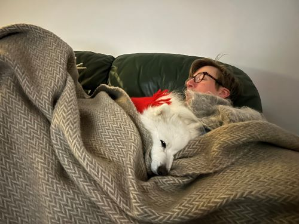

🌈❤️ Suki, our angel
- 2023-12-17 -
[Love] [Vita Lejonet] [日本スピッツ] [White Angel] [Rainbow Bridge]
🌸9e December 2011 - 14e Juni 2024🌸
Vi älskar dig. Vi ses snart igen 🌈❤️❤️❤️
🌼🌸🌷🌈❤️🌼🌸🌷🌈❤️🌼🌸🌷🌈❤️"Just this side of heaven is a place called Rainbow Bridge.
When an animal dies that has been especially close to someone here, that pet goes to Rainbow Bridge. There are meadows and hills for all of our special friends so they can run and play together. There is plenty of food, water and sunshine, and our friends are warm and comfortable.
All the animals who had been ill and old are restored to health and vigor. Those who were hurt or maimed are made whole and strong again, just as we remember them in our dreams of days and times gone by. The animals are happy and content, except for one small thing; they each miss someone very special to them, who had to be left behind.
They all run and play together, but the day comes when one suddenly stops and looks into the distance. His bright eyes are intent. His eager body quivers. Suddenly he begins to run from the group, flying over the green grass, his legs carrying him faster and faster.
You have been spotted, and when you and your special friend finally meet, you cling together in joyous reunion, never to be parted again. The happy kisses rain upon your face; your hands again caress the beloved head, and you look once more into the trusting eyes of your pet, so long gone from your life but never absent from your heart.
Then you cross Rainbow Bridge together.... "